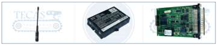

Partes de control remoto

← Volver a productosTECAS · TCS-CR01
Partes de control remoto
Componentes para el mantenimiento de sistemas de control remoto industrial. Una selección de partes para conservar la respuesta de los mandos y la comunicación con el equipo.
- Partes de control
- Transmisores, receptores y componentes asociados al sistema de mando.
- Uso
- Mantenimiento y reposición de componentes en maquinaria industrial.
- Selección del componente
- Se considera la marca, el modelo, la referencia y las funciones requeridas por la maquinaria.
- Compatibilidad
- La configuración se define según el sistema de control y las conexiones del equipo.
- Soporte
- Orientación para identificar el componente y su integración en la aplicación.